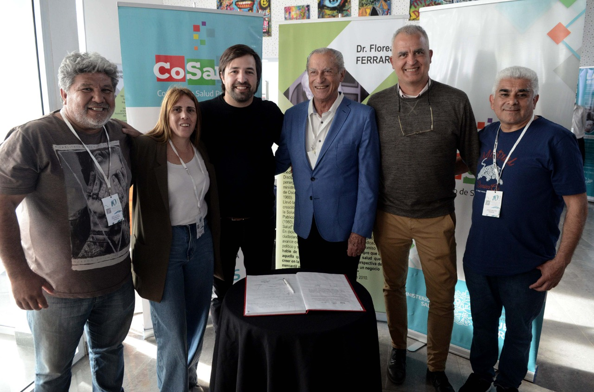
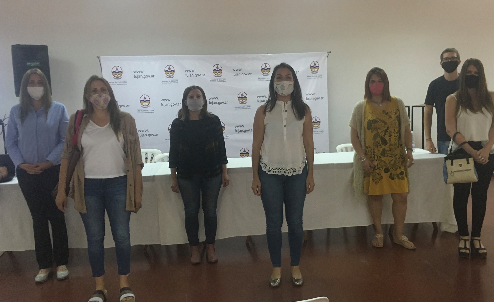

Veronica Andrea Arias
Lic. en Trabajo Social
titulos universitarios
- Licenciatura en Trabajo Social. Expedido por la Universidad Nacional de Luján (UNLu). 2004.
- Técnica Universitaria en Minoridad y Familia. Universidad Nacional de Luján (UNLu). 2000.
posgrados y actualizaciones
- Posgrado “Introducción a las Problemáticas de Consumo”. Titulo Expedido por la Universidad autónoma de Entre Ríos (UADER) y organizado en conjunto con SEDRONAR. 2018.
- Actualización en Derechos de la Niñez y la Adolescencia en contextos sociales, políticos y culturales. 2017. Facultad de Ciencias Sociales UBA.
- Seminario Nacional de Nuevas Tecnologías para políticas niñez, adolescencia y familia. SENAF 2012.
Datos personales
-Apellido y Nombre: Arias Verónica Andrea
-DNI: 23.670.036
-Lugar y fecha de nacimiento: Capital Federal. 14/12/1973
-Domicilio: Orbegoso 662, fráncico Álvarez, Moreno.
-Teléfono: 011-15-53112537
-Correo electrónico: vechino2001@yahoo.com.ar
-CARGOS DESEMPEÑADOS EN INSTITUCIONES PÚBLICOS Y DESEMPEÑO PROFESIONAL:
- Integrante del Equipo Técnico del Consejo Provincial de Salud. Ministerio de Salud de la Provincia de Buenos Aires. Desde 2021.
- Coordinadora del Área de Promoción de Derechos del Niño. Dirección de Niñez y Adolescencia Lujan. 2021-2022.
- Coordinadora Servicio Local del Municipio de Lujan. Del Área de Atención de Casos y del Área de Programa: Programa Adolescencias: Adolescentes en conflicto con la ley penal, Situación de calle y consumos problemáticos. Dirección de Niñez y Adolescencia Lujan. 2020-2022.
- Coordinadora General de la Dirección General de Niñez y Familia. Municipio de Moreno. 2018 – 2020.
Responsable de la Supervisión y Coordinación General de los ocho Programas de la Dirección: Acompañamiento y Supervisión Institucional, Acompañamiento Familiar, Crianza, Responsabilidad Penal Juvenil, Adolescencias, Autonomía Joven y Amuyen (Chicos en Situación de Calle). Diseño e implementación de Programas de Promoción, Capacitación y Articulación Territorial de la Dirección.
- Coordinadora del Programa Fines II. Municipio de Merlo. 2018.
-Integrante equipo Técnico del Programa Acompañamiento y Supervisión Institucional. Dirección General de Niñez y Adolescencia. Municipio de Moreno. 2015 – 2017.
-Integrante del Equipo Profesional del Centro de Referencia Moreno. Organismo Provincial de Niñez y Adolescencia. Ministerio de Desarrollo Social, Provincia de Buenos Aires. 2010 - 2012 y 2015 – 2020.
-Directora de Niñez y Adolescencia, juventud y Géneros. Municipio de General Rodríguez. 2012-2015. Responsable de: -Servicio Local de Protección de Derechos: Área Atención de casos, Programas y medidas (programa de niños en situación de calle, Acompañamiento Familiar, Programa de Acompañamiento Terapéutico, Revinculación Familiar, Familias Comunitarias.
-Centros de Promoción Integral de Derechos del Niño: Diseño y Desarrollo de cuatro espacios en Barrios con gran complejidad social del Municipio, desarrollando actividades culturales, deportivas, lúdicas, artísticas y educativas, tendientes a la Promoción de Derechos del Niño.
-Programa Envión: Programa de Responsabilidad Compartida, para jóvenes en situación grave de vulnerabilidad social.
-Dirección de Juventud: Diseño y desarrollo de actividades culturales, deportivas, educativas, de formación laboral, políticas y de inclusión social, tendientes a la construcción de sujetos sociales y políticos. -Diseño y desarrollo del Área Políticas de Géneros: Área de Asistencia Integral de la Violencia de Género; Área de Promoción, Capacitación y Articulación; Área de Asesoramiento y Acompañamiento; Tratamiento Individual a mujeres víctimas de violencias. Gestión y supervisión del convenio con una institución de Alojamiento transitorio para mujeres en situación de violencia de Género y sus hijos.
-Coordinadora General del Servicio Local de Protección de Derechos del Niño. Municipio de Luján. Área de Programas y Medidas y el Área de Atención de Casos. 2010 - 2011.
-Referente en los Partidos de Gral. Rodríguez y Luján de la Subsecretaría de Niñez y Adolescencia. Ministerio de Desarrollo Social. Provincia de Buenos Aires. 2009- 2010.
-Directora del Servicio Zonal Oeste (Comprendido por los partidos de La Matanza, Hurlingham, Morón, Ituzaingo, Merlo, Moreno) Subsecretaría de Niñez y Adolescencia. Ministerio de Desarrollo Social. Provincia de Buenos Aires. 2008 - 2009.

partido de la costa-2022 
PUBLICACIONES Y OTROS TRABAJOS CIENTIFICOS:
Compilación Bibliográfica:
-trabajo seleccionado para publicación de Sedronar y UADER. 2020.- “La intervención Profesional con los jóvenes insertos en el Sistema de Responsabilidad Penal Juvenil frente al consumo de sustancias psicoactivas”. ¿Punibilidad o Protección de Derechos? 2018.
Artículo en revista:
- “Ley de Protección al Niño”. Boletín del Colegio de Médicos de la Pcia. De Buenos Aires Distrito III. N º 87 del año 2009.Artículos en Internet:
- “Hogares convivenciales, defensa de los Derechos del Niño o mas Vulneración”. www.catspba.org.ar . 2009. sección Documentos y Artículos.- “Ley de Protección al Niño”. http://www.colmed3.com.ar/nota05.php. 2009.
Artículos en soporte digital: - ¿Qué perfil profesional Queremos? ¿Que trabajadores Sociales estamos formando? ¿Cuáles son las necesidades del Mercado Laboral?
- Algo está sucediendo y tiene que ver con…Entre la perplejidad y la incertidumbre ¿Quienes son los estudiantes de Trabajo Social? .2009